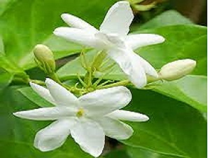

About Jasmine:
Jasmine (taxonomic name Jasminum /'jæsm?n?m/ YASS-min-?m[5]) is a genus of shrubs and vines in the olive family (Oleaceae). It contains around 200 species native to tropical and warm temperate regions of Eurasia and Oceania. Jasmines are widely cultivated for the characteristic fragrance of their flowers. A number of unrelated plants contain the word "jasmine" in their common names (see Other plants called "jasmine").
Jasmine can be either deciduous (leaves falling in autumn) or evergreen (green all year round), and can be erect, spreading, or climbing shrubs and vines. Their leaves are borne in opposing or alternating arrangement and can be of simple, trifoliate, or pinnate formation. The flowers are typically around 2.5 cm (0.98 in) in diameter. They are white or yellow in color, although in rare instances they can be slightly reddish. The flowers are borne in cymose clusters with a minimum of three flowers, though they can also be solitary on the ends of branchlets. Each flower has about four to nine petals, two locules, and one to four ovules. They have two stamens with very short filaments. The bracts are linear or ovate. The calyx is bell-shaped. They are usually very fragrant. The fruits of jasmines are berries that turn black when ripe. The basic chromosome number of the genus is 13, and most species are diploid (2n=26). However, natural polyploidy exists, particularly in Jasminum sambac (triploid 3n=39), Jasminum flexile (tetraploid 4n=52), Jasminum mesnyi (triploid 3n=39), and Jasminum angustifolium (tetraploid 4n=52).[6]
Jasmines are native to tropical and subtropical regions of Eurasia, Australasia and Oceania, although only one of the 200 species is native to Europe.[7][8] Their center of diversity is in South Asia and Southeast Asia.[9] A number of jasmine species have become naturalized in Mediterranean Europe. For example, the so-called Spanish jasmine (Jasminum grandiflorum) was originally from West Asia and the Indian subcontinent, and is now naturalized in the Iberian peninsula.[6] Jasminum fluminense (which is sometimes known by the inaccurate name "Brazilian Jasmine") and Jasminum dichotomum (Gold Coast Jasmine) are invasive species in Hawaii and Florida.[10][11] Jasminum polyanthum, also known as White Jasmine, is an invasive weed in Australia.[12]
Jasmines are native to tropical and subtropical regions of Eurasia, Australasia and Oceania, although only one of the 200 species is native to Europe.[7][8] Their center of diversity is in South Asia and Southeast Asia.[9] A number of jasmine species have become naturalized in Mediterranean Europe. For example, the so-called Spanish jasmine (Jasminum grandiflorum) was originally from West Asia and the Indian subcontinent, and is now naturalized in the Iberian peninsula.[6] Jasminum fluminense (which is sometimes known by the inaccurate name "Brazilian Jasmine") and Jasminum dichotomum (Gold Coast Jasmine) are invasive species in Hawaii and Florida.[10][11] Jasminum polyanthum, also known as White Jasmine, is an invasive weed in Australia.[12]
National flower Several countries and states consider jasmine as a national symbol. Syria: The Syrian city Damascus is called the City of Jasmine.[21] Hawaii: Jasminum sambac ("pikake") is a common flower used in leis, and is the subject of many Hawaiian songs.[citation needed] Indonesia: Jasminum sambac is the national flower, adopted in 1990.[22] It goes by the name "melati putih" and is used in wedding ceremonies for ethnic Indonesians, especially on the island of Java. Pakistan: Jasminum officinale is known as the "chambeli" or "yasmin", it is the national flower.[citation needed] Philippines: Jasminum sambac is the national flower. Adopted in 1935, it is known as "sampaguita" in the islands. It is usually strung in garlands which are then used to adorn religious images.[citation needed] Thailand: Jasmine flowers are used as a symbol of motherhood.[23]